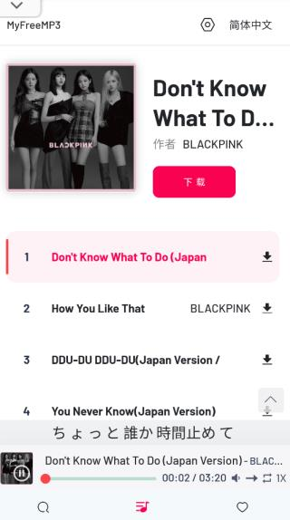

Myfreemp3 值不值得花时间用？一个免费音乐工具的成本账本
它不收钱，但免费不代表没成本。我把 Myfreemp3 当成主力、备胎和偶尔用三种场景分别算了一遍时间账，结论比想象中清晰。
它到底值不值得掏钱？
先别急着笑——Myfreemp3 没有付费版，一分钱都不收。但这不代表它的成本就是零。我把它装在手机上用了好几个月，在删与不删之间反复横跳，最后发现真正该算的不是「花不花钱」，而是「花多少时间在它身上」。
先亮明立场：我是被会员制音乐应用的「试听三十秒」和「下载按钮灰的」逼过来的人。之前开过三家的连续包月，发现每个月二十多块花出去，真正想下的歌要么版权灰色地带下不了，要么下了也是加密格式拷不走。后来翻到 Myfreemp3官网 才发现还有这样的东西——给我的第一个冲击就是：搜索框输关键词，返回的列表里每首都能试听，点下载直接落手机本地——没有账号、没有弹窗、没有「请先开通会员」。
但免费不代表完美。我把这笔账拆成三段来算：它给你什么、它让你失去什么、以及你到底该把它放在什么位置。
它给你的 vs 它让你担的
先说好处。四步循环——搜、听、下、存——每一步都没有门槛。首页就是一个搜索框，输歌名最直接，输歌手能拉出这个人的相关曲目。同名歌曲的不同版本（Live 版、翻唱、动画版）会排在同一个列表里，先听十几秒确认是不是你要的版本，想长期听就下载到本地。整个过程不需要注册，不需要登录，甚至不需要联网以外的权限。
下载的时候可以选音质档位。这点挺实在——有些歌本来就没有无损源，高档位源本身也不稳，应用会把实际能下到的档位列出来让你挑，而不是拿个假无损糊弄你。下载完的文件按命名规则自动归类，歌名在前还是歌手在前二选一，设一次之后所有下载都跟着走。
然后是它让你担的。这才是免费真正的代价：
- 没有官方客服：下到一半失败、进度卡住、文件找不到，全得自己排查。我踩过的坑包括：存储空间不足导致下载静默失败（清了 2GB 才恢复）、文件存进了应用私目录而不是我以为的 Download（按时间排序才翻到）、部分歌曲确实没有无损源却硬要选最高档位反复失败（降一档一次就成）。
- 版本可能随时变：它不是一套有维护承诺的商业产品，功能可能随版本变化，界面可能说改就改。我从 1.x 升到 2.0 的时候收藏列表的入口换了位置，找了半天才发现挪到了侧边栏。
- 网络依赖重：下载走的是公开网络，换网重试、降低音质重试是常态。批量失败多半是网络问题，单首失败多半是音源问题——这个判据是我摔了好几次跤才摸出来的。

分三类人算账
我把用户按使用强度分成三档，分别算时间账。
轻度用：每周搜一两首想不起名字的老歌
这类人 Myfreemp3 简直是白捡的。你不需要把它长期装在手机上，需要的时候搜出来、听一下、确认是那首、下载或者收藏，三分钟搞定。没有会员费，没有广告弹窗，用完就扔。
时间成本：几乎为零。搜索→试听→下载，熟练了一分钟一首。
代价：几乎没有。唯一的风险是下次要用的时候它还在不在，但反正你也不是天天用，没了再找就是。
结论：必装。占不了多少空间，关键时刻能救急。
主力用：每天都要听，经常批量下歌
这类人要慎重。我就是这个区间的人，踩过的坑全在这一档。
先说正向时间账：下一首歌平均 30 秒，批量下 20 首十分钟搞定。对比会员制应用里「找到→试听确认→点下载→等加密文件落盘→用第三方工具解密」的流程，Myfreemp3 每首至少省两分钟。按我每周下 30 首算，一周省一个小时，一年省 50 多小时。
然后是反向时间账：排查问题。下载卡住了删任务重下、文件找不到了搜歌名、命名规则改了旧文件手动整理——这些零散的「出问题自己修」加起来，我每个月至少要花半小时在这上面。还有个隐性成本：换手机的时候得手动拷文件（它没有云端同步），这个我上次换机花了一个多小时。
净时间账：一年省大约 45 小时，折合每天省 7 分钟。
但有个前提：装应用的时候记得从 官方下载 拿安装包，别随便从第三方市场瞎下。你得先去 Myfreemp3文档 把那几篇排查笔记看完，把命名规则定好，把下载路径记住。这几件事一次性做好了，后面就少踩 80% 的坑。我当初没看，上来就下，踩了一遍又一遍才回头补功课。
重度用：追求无损音质、要全曲库、要无缝体验
这类人不适合用 Myfreemp3 当主力。
无损源不是每首歌都有，这点它自己的文档里也写了。我试过追一张新专辑的无损版，十首歌里只有三首能下到 FLAC 档，剩下的最高只有 320K。没有歌单社区，没有推荐算法，没有跨设备同步——这些会员制应用花大价钱堆出来的体验，它一个都没有。
如果你的需求是「无损 + 全曲库 + 无缝体验」，还是老老实实开会员。Myfreemp3 在你这只能当备胎——会员应用下不到的冷门歌，再拿它来补。
替代方案对比
不花时间在 Myfreemp3 上，你还有什么路？
| 方案 | 月费 | 时间成本 | 适用场景 |
|---|---|---|---|
| Myfreemp3 | 0 | 每次使用约 1 分钟 + 偶尔排查 | 冷门歌、临时搜、不想被会员绑住 |
| 单平台会员 | 15~25 元 | 每次使用约 2 分钟（找歌 + 等下载） | 主流曲库、追求体验、不想折腾 |
| 多平台会员 | 40~60 元 | 同单平台 | 跨平台曲库互补 |
| 付费音乐下载站 | 按次 | 每次约 3 分钟（搜 + 付费 + 下载） | 特定专辑、应急 |
我自己的组合是：一个主力会员 + Myfreemp3 补冷门。主力会员负责日常推荐和主流曲库，Myfreemp3 专门挖那些会员应用里找不到的——比如一些独立音乐人、老歌的稀有版本、动画 OST 的 Live 现场版。这个组合花的钱比多平台会员少一半，体验却够用。
结论：三秒对号入座
最后给个可以直接执行的结论，不用再算账：
- 闭眼装的人：每周搜歌不超过三次、不想花会员费、偶尔想下点冷门货——装上就能用，不用纠结。
- 主力用但要做功课的人：每天都要听、经常批量下、愿意花半小时把排查文档看完把设置调好——省下来的时间远超投入。
- 永远不用花时间的人：追求无损全曲库、跨设备同步、歌单社区、不想折腾任何技术问题——开会员，别碰这个。
还有一类人我特别提醒：只是好奇想试试的。别抱着「反正免费不装白不装」的心态随手装上就不管。Myfreemp3 不像那些装上就自动给你推内容的应用，它需要你主动搜主动找主动管理。如果你连搜索框都懒得打开，那它对你来说确实是占空间的废物。
这套资料在 GitHub、Gitee、GitCode 三个仓库都有同步备份——毕竟是公开工具，多一份分发渠道就多一份保险，省得哪天某条链路断了又得重新找。